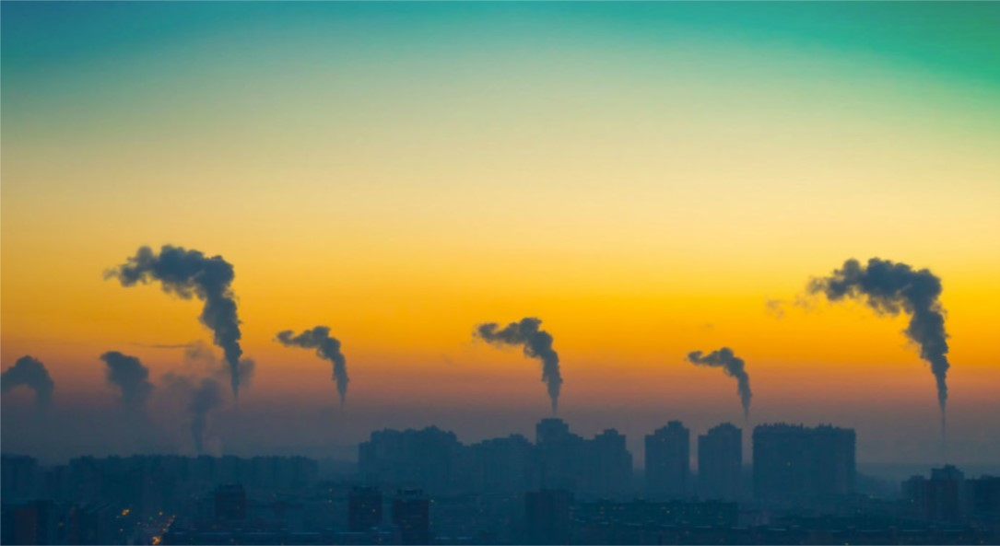
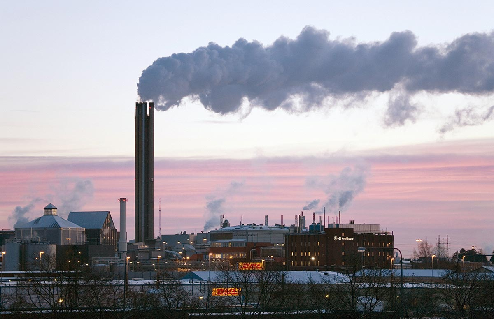

Our group is exploring the implications of climate change on communities in the United States. We will take a deeper dive into the short-term and long-term effects of climate change and the various elements it potentially could influence, including: sea-level, life on earth, surface temperature, animal behaviors and carbon emissions. Also, the research we are conducting will explore the way in which different governments address climate change and the funding dedicated to mitigate any risks.
- 

- 
Earth is 4.6 billion years old, but modern humans have only appeared about 200,000 years ago. If this time frame were put on a clock, humans do not appear until 3 seconds before midnight. Human history is relatively short, however, our impact is arguably one of the most intense. Earth’s natural systems have been tremendously impacted and altered by anthropogenic forces such as the building of societies, advancements in agriculture, and global colonization, among other factors. One of the most notable impacts that humans have had is the exponential increase in carbon dioxide (CO2) emissions into the atmosphere. Though Earth’s climate has cycled through stages with various levels of this compounds, it has never increased so much so quickly. Up until the early 1800’s the amount of CO2 levels remained relatively constant for 650,000 years at below 300 parts per million (ppm). However, due to industrialization and population growth, this began to rapidly change thereafter and has been increasing exponentially since. Today’sCO2levels average over 400 ppm and are expected to continue to increase. Though Earth has has greater levels of this compound before human times, it has never experienced such a profound and sharp influx. This influx has caused a shift in climate and atmospheric composition which is collectively referred to as climate change. Climate change has many implications and presents unprecedented anthropogenic and environmental complications.
When regarding the many theories and hypotheses of climate change, there is a widespread belief climate change is due to anthropogenic, or man-made) global warming. It is holds that man-made greenhouse gases are the largest contributor to global warming which has been occurring for over the past 50 years.
Human history is relatively short, however, our impact is arguably one of the most intense.
Though one paper outlines six other theories about climate change, and the direct source is transposed below.
1) Bio-thermostat -- rising temperatures and levels of carbon dioxide (CO2) in the atmosphere trigger biological and chemical responses that have a cooling effect, like a natural thermostat.
2) Cloud formation and albedo -- changes in the formation and albedo of clouds create negative feedbacks that cancel out all or nearly all of the warming effect of higher levels of CO2.
3) Human forcings besides greenhouse gases -- mankind’s greatest influence on climate is not its greenhouse gas emissions, but its transformation of Earth’s surface by clearing forests, irrigating deserts, and building cities.
4) Ocean currents -- global temperature variations over the past century-and-a- half and particularly the past 30 years were due to the slow-down of the ocean’s Thermohaline Circulation (THC).
5) Planetary motion -- natural gravitational and magnetic oscillations of the solar system induced by the planet’s movement through space drive climate change.
6) Solar variability -- changes in the coronal ejections and magnetic fields of the sun cause changes in cloud formation, ocean currents, and wind that cause climate to change.